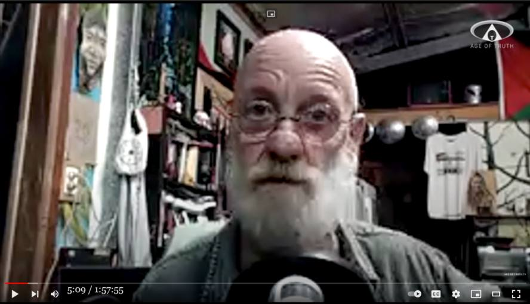

Max Igan : 私は選ばれた。私の精神に侵入した光ビームが地球は平面かつホログラム投影だと告げた
前置き
- 2年前、Max Igan が up した動画が一部で話題になった。今回、その Max Igan がインタビューに応じている。 - 彼はタイトルにある自身の体験の真実性を全く疑っていない。その意味で「体験の絶対性の罠」の典型的な事例になっている。記録に値する。 音声書写（自動生成）
▼展開
LA(host): other topics but first of all max we got a talk in January 2020 just a little 3:05 under two months ago you came out shocking your audience and followers on 3:11 your channel and website by claiming that an artificial light frequency 3:18 invaded your mind and told you that the earth is flat after that you said that 3:27 the earth is not only flat but also round a globe like we've been educated 3:34 to believe you also said that the earth is a holographic projection ... you also in your first video and statement 4:05 claimed that you were the chosen one please 4:11 take us through all of this what actually happened ---- ---- MI: well it's called being 4:20 a targeted individual brother is what it's all about I was making a series of videos and I was reaching a lot of 4:26 people on the fires that were happening here the five videos I was putting out were going viral and I got hit with well 4:32 I can only assume is the voice of God technology that we've heard so much about and it flipped my personality it 4:39 literally flipped my personality and it wasn't even about the earth being flat or anything like that it was just about 4:46 making me become the opposite of what I was but it's really interesting the way they do it because it was all jumbled up 4:52 with memories of mine and all sorts of stuff it was was absolutely bizarre but 4:58 it was it was an absolute impulsive had it was like it was really interesting actually because when I uploaded that 5:04 video I was we had a whole bunch of people here doing a sound healing at a building we've got on on the property 5:10 here and I was parked in I couldn't even get my car out but I had I did like a six-point turn to get my car out I drove 5:16 down the side of the house through the bushes and scratched my car and drove over the edge of the fireplace and all sorts of stuff to get into town because 5:22 I had to get the video uploaded by midnight because it was like the meaning of my life for this sort of stuff was 5:28 really interesting to had happen but there was a series of events that led up to it there was adrenalin that pumped through 5:34 my body for the whole day up until about midnight that night then I got hit by this this war whatever it was this and 5:42 it was like a it was a rectangular light that literally I saw descend and hit me on the pineal gland and then pull away 5:48 from me I know it sounds bizarre to people but that's what it was that's what I saw you know I can't explain it any other 5:55 way and the saving grace for me was that I actually saw it come in and hit me so even while I was making the video I 6:02 don't know whether you saw the video I mean I deleted it when I came back to my senses but even through the video I was 6:07 saying but this was technology and trying to make a joke out of to say I'm supposed to be the chosen one because it 6:13 had all of these series of events and I could see how they did it how they can take sections of your life and little 6:20 moments of your life and they can convince you that this is what has happened that you've had this the Epiphany and they've got contacted by 6:27 certain people as well telling me I was an ascended master and all sorts of stuff like that so they're kind of 6:32 selling it to people as ascension you know I've seen all this happening and I've gone through this and fortunately I 6:40 had some really good friends around and I was able to kind of unload onto them and I was literally talking at them for 6:46 about you know six days I was just a babbling fool how I've been in town when 6:51 that had happened I'd probably end up in there in a nut house the night that happened the very next day there was an 6:59 article in the newspaper about me and the five videos I'd be putting out saying that conspiracy theorist Maxine 7:06 is claiming the fires were cited with directed energy weapons which is exactly the opposite of what I was saying I was saying people need to be very careful of 7:12 vetting the claims they're making and then there was a coordinated troll farms it hit my channel and then there were 7:18 claims of plagiarism that were put out against me at the same time so it was a coordinated attack and it was was all 7:24 done to bring attention to me and then having me discredit myself you know but you have actually admitted publicly that 7:30 you've been smoking a lot of marijuana hashes cannabis weed or whatever it is 7:37 that you're smoking but could that actually have contributed or played a part in what took place in January 2020 7:45 could that have triggered your mind and becoming delusional or hearing voices some kind of psychosis what are your 7:53 thoughts on that ---- ---- MI: I absolutely believe it was it was a targeted thing I mean I've when I was 7:58 younger I was a musician I did all sorts of exotic drugs I've done acid I've done mushrooms I've done DMT I've done 8:04 ayahuasca girl bounce lots of stuff you know I don't smoke weed my whole life I'm okay with that this was not like 8:10 anything like that this was technology this was absolutely technology I mean even thinking you're 8:16 the light of God or whatever I don't know if God would use a rectangular beam it seemed like technology depends on 8:24 your perception of God right well I guess I you know everyone has their own 8:29 perception of God but but it felt like something the only way to go is it felt 8:35 like something took a snapshot of my mind it almost felt like there was an interface it almost felt like this is a simulation and I'm being interfaced by a 8:44 higher realm something like that like there was like there was an operator I almost felt like I almost 8:49 caught a glimpse of a room with people in it you know it's it's a we it was a weird thing but through the whole thing 8:55 I I saw how all of the realities could fit together I saw how the the the globe 9:01 earth and the Flat Earth and the fractal earth and the holographic earth and the electric universe I saw how all this can 9:09 all coexist together it all depends on what state your awareness is in which 9:14 isn't even your consciousness it's it's the information that we get fed to us you know I saw had a whole interface of 9:20 how we're being pulled into AI through these scrying mirrors that were involved in all the time these computer screens 9:26 it's all being done wirelessly it's not doesn't necessarily have to be done through Scott plugs and microchips they 9:32 can do it wirelessly where electrical beings where electrical energetic beings and the radiation that comes off the 9:39 monitors we are interfacing with this all the time we've all had experiences where people have said something and 9:45 their mobile phones picked it up in the next thing you know you're getting ads from Facebook and stuff for whatever it was that you said I've had instances Rob 9:53 literally thought of something you know III take tumeric for my my arthritis in 9:59 my left thumb sure makes a pretty random thing while sitting here one day just thinking I need to buy some more 10:04 turmeric I didn't say it out loud I just thought it and within two minutes I had two ads for tumeric appear in my mailbox 10:11 that's pretty random Amazon trying to sell me tumeric you know that's a pretty 10:16 random email to get and I didn't say it out loud I only thought it and I realized then that this seems reading my 10:22 thoughts it they're reading our thoughts they've tailored this interface and the 10:28 way they've replaced the monitors over the years with from the analog monitors to the digital Morrison 10:34 that I went to the o2l a day so it's different at the LED what's the LED doing this light interface how are we 10:40 interacting with this and what is it extracting from us how much of our 10:45 awareness are we transferring into the virtual world they've got everybody mapping everything cameras everywhere 10:52 cameras they film your draws film everything all but sky into the virtual world how easy would it would it be for 10:58 them to create a virtual wall on a mainframe pull your consciousness in there and would you know would you know動画(1:57:55)
MAX IGAN ~ "A.I. Mind Virus Frequency Attack & Flat Earth vs. Globe Earth" [Age Of Truth TV] [HD]コメント 1
- 彼の主な主張は、陰謀論や地球平面論に括られているようだが、たぶんそれは本質的ではない。なぜなら、彼の場合は特徴的な統合失調症の幾つかの要素が色濃く含まれているように思える。コメント 2
- Max Igan のタイトルの趣旨の主張を聴くと、「彼はイカれている」と誰もが感じる筈。 - だが、Max Iganの ・(a) 私は選ばれた。 ・(b) 光ビームが私の精神に入り込み、地球は平面かつホログラム投影だと教えられた。 と、精神世界にカブレた abductee/contactee の語る ・(a)' 私は人類の意識の周波数を上げるという崇高な使命を担って地球人として転生してきた。 ・(b)' テレパシー/download/啓示/チャネリング で、 - 銀河連邦の一員になるための教えを受けた。 - 全てはひとつ、愛が全てだ…と教えられた。 - 世界の最奥の真理を理解した。 の間にどれ程の違いがあると言えるのか？コメント 3
- 実は、Max Igan のイカレ具合などは極々、軽微。上には上がいる。それが下の連中。 - 「Hitler もあの世では、素晴らしい大役を見事に演じたと皆に称賛されている筈だ」と公然と宣う Desta Barnabe, Richard Martini, Grant Cameron, Chase Williamson, Walter Rucker らのイカレ具合（下）に比べれれば、Max Igan は良識を豊かに備えた立派な常識人に見えてくる。・人間は本来、不死の存在。なので現世における死はマヤカシ。誰も（本当の意味では）死なない。 ・だから、人を殺しても（本当の意味では）殺したことにはならない。 ・さらに邪悪も（本当の意味では）存在しない。邪悪な事をする人は（現世という舞台で）その役を勤めているだけ。 ref: Richard Martini：虐殺の被害者ですら、その人生を自ら選択して生まれてきた （途中：その1） (2017-03-05)39:00--41:40 Desta のタワゴト。悪はない。どんな酷いことも。経験が重要で善悪は関係ない。全ては完全。 38:00-- 核心部分。最近、体験しメッセージを得た。経験が全て。以前は、Oneness や愛が最重要だと信じていたが、そのメッセージで意見が一変した。 38:25 Hitler の件。 ・Hitler もあの世では、素晴らしい大役を見事に演じたと皆に称賛されている筈だ…という Michale Newton （*2）に由来したと思しき精神世界に特有の見解がある。(2022-06-02)音声書写（自動生成）
・これまで、そのような見解にはどうしても同意できなかった。だがメッセージを得てからは、同意できるようになった。 41:40 まで。 ・そのメッセージに Chase Williamson が完全同意している。全く同じメッセージを得たと。 43:35 Grant Cameron も 同意。 48:00 Walter Rucker も同意。片腕、両手、無手の比喩。 ref: 【編】Desta Barnabe : 至高の存在はあらゆる経験を望んでいる。どんなに悲惨な体験も経験それ自体に至上の価値がある。 （途中1） (2021-08-23)▼展開
you 38:13 used to talk about a long time ago uh 38:15 the thing about michael newton and 38:16 hitler 38:17 and hitler walked off the st walked off 38:19 the stages and died 38:20 and you know he went to his guides or 38:22 whatever and they you know gave him a 38:24 standing ovation or whatever and i 38:25 always hated that and i always argued 38:27 about 38:27 that with you
初出
Max Igan : 私は選ばれた。私の精神に侵入した光ビームが地球は平面かつホログラム投影だと告げた (2022-06-02)